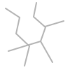

Temp UI/game assets: hints, patterns, seals, tentacles, marks, and overlays.
beacon_eye.svg
beacon_seal.svg
board_edge_rough.svg
completion_stamp.svg
contradiction_crack.svg
hint_ink_arrow.svg
hint_ink_circle.svg
journal_divider.svg
lighthouse_mark.svg
tentacle_corner_bottom_left.svg
tentacle_corner_bottom_right.svg
tentacle_corner_top_left.svg
tentacle_corner_top_right.svg
territory_pattern_chart.svg
territory_pattern_coral.svg
territory_pattern_current.svg
territory_pattern_fog.svg
territory_pattern_sea.svg

territory_pattern_stone.svgwatcher_spinner.svg